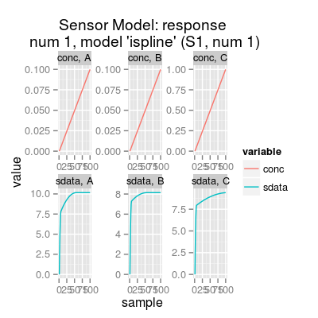

Class SensorModel predicts a sensor signal
in response to an input concentration matrix by means of
a regression model stored in slot dataModel.
The model explicitely assumes that the sensor response to
a mixture of analytes is a sum of responses to the
individual analyte components. Linear models mvr
and plsr follow this assumtion in their nature.
Slots of the class:
num |
Sensor
number (1:17). The default value is 1. |
gases |
Gas indices. |
ngases |
The number of gases. |
gnames |
Names of gases. |
concUnits |
Concentration units external to the model, values given in an input concentration matrix. |
concUnitsInt |
Concentration units internal for the model, values used numerically to build regression models. |
dataModel |
Data model
of class SensorDataModel performs a
regression (free of the routine on units convertion,
etc). |
coeffNonneg |
Logical whether model
coefficients must be non-negative. By default,
FALSE. |
coeffNonnegTransform |
Name of transformation to convert negative model coefficients to non-negative values. |
beta |
(parameter
of sensor diversity) A scaling coefficient of how
different coefficients of SensorDataModel
will be in comparision with those coefficients of the
UNIMAN sensors. The default value is 2. |
Methods of the class:
predict |
Predicts a sensor model response to an input concentration matrix. |
coef |
Extracts the
coefficients of a regression model stored in slot
dataModel. |
The plot method has two types (parameter
y):
response |
(default) Shows the sensitivity curves per gas in normalized concentration units. |
predict |
Depicts
input (parameter conc) and ouput of the model for
a specified gas (parameter gases). |
# sensor model: default initialization sm <- SensorModel() # get information about the model show(sm)Sensor Model (num 1), beta 2, data model 'ispline'Sensor Model - num 1 - beta 2 - 3 gases A, B, C - (first) data model - method: ispline (type: spline) - sensor model: coeffNonneg TRUE -- coefficients (first): 7.5816, 2.5812, 0 ... 0[,1] [1,] 7.581598 [2,] 2.581216 [3,] 0.000000 [4,] 7.194504 [5,] 0.946807 [6,] 0.000000 [7,] 7.869399 [8,] 1.551513 [9,] 0.000000
[1] "plsr" "mvr" "broken-stick" "ispline"Sensor Model - num 7 - beta 2 - 2 gases A, C - (first) data model - method: plsr (type: mvr) - ncomp: 2 - sensor model: coeffNonneg FALSE -- coefficients (first): 0.186, 0.0116Error in find.package(package, lib.loc, verbose = verbose): there is no package called ‘chemosensors’# method plot # - plot types 'y': response, predict sm <- SensorModel() # default sensor model plot(sm, "response", main="plot(sm, 'response')") # default plot type, i.e. 'plot(sm)' does the same plottingconc <- concSample(sm, "range", gases=1, n=10) plot(sm, "predict", conc, gases=1, main="plot(sm, 'predict', conc, gases=1)")
UNIMANshort